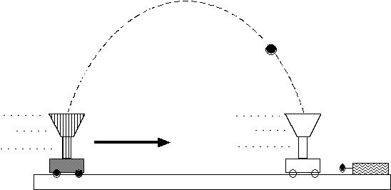

Description: This video from MIT's archive focuses on illustrating the principle of relative motion using the common example of an object with parabolic trajectory and an object with a linear trajectory. This useful demo can be paired with a discussion on why the two objects collide.

Quote: A cart moving in a straight line shoots a ball straight up. The ball follows a parabolic path and is caught in a large funnel on the moving cart.